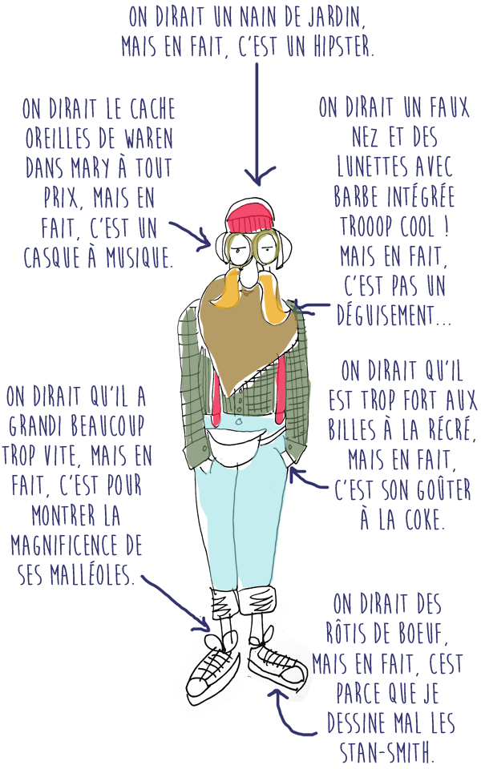

To geek or not to geek.
Être geek c’est faire partie d’un univers de gens trop swags qui portent des t-shirts trop larges qui datent de la prise de la Bastille et ont une haleine de caca fé mais pas que ! Qui pensent, mangent, respirent différement. Hé oui !
Je m’essplique : apparement pour être geek il faut être curieux, se tordre les méninges pour essayer de comprendre et de résoudre des problèmes, tout ça en étant une grosse feignasse. C’est à dire: minimiser son labeur pour garder
du temps pour gamer et faire des poses clopes en trouvant le moyen le plus efficace et le plus rapide de solutionner un truc qui cloche, derrière un ordi mais aussi dans le quotidien car la vie nous réserve son lot de surprises
!
Comme dit mamie wallowall:
“La vie est une tartine de merde dont on mange un morceau chaque jour”
(Oui, mamie wallowall est un modèle d’optimisme).
C’est bien pour ça qu’on parle carrément d’un mode de vie et d’une catégorie de personnes : y a les bobos, y a les hipsters, y a les geeks.
Les bobos tu les croisent dans les “label vie” et aux buttes chaumont, ils pensent à l’écologie et mangent des noisettes ;

les hipsters tu les trouvent sur “soundcloud” et dans les festoches à la mode, ils pensent à leurs stan smith et mangent de la coke ;
et les geeks, tu les hight five virtuellement sur les forums et les jeux en lignes, ils pensent à leur prochain hack et mangent du café car ça fait mal aux yeux de rester sur un ordi et de faire marcher son cerveau à fond les manettes.
Mais si on les voit pas comment les reconnaitre me direz-vous ? Bonne question mon cher Watsonne !
Ils ont des langages spécifiques pour s’adresser aux autres mais aussi pour s’adresser à leur machine :
Comment s’adressent-ils aux autres ? Vas donc chez speedy, Speedy euh... vas donc sur un forum demander “comment on fait pour cliquer droit sur mac ?”. Si on t’envoit bouler en te criant Rtfm ! Tu as certainement affaire à un spécimén du genre. Attention, Rtfm” c’est pas une radio locale, ça veut dire "read the fucking manual !” car tu peux trouver ça comme un grand en fouillant sur google, suffit juste de te bouger le derch’. C’est exactement ça qui les définit : un geek ça auto apprend, ça trifouille, ça bidouille et quand vraiment ça ne trouve pas, ça demande aux copains en faisant des formulations alambiquées pour faire s’agiter les petits neuronnes de leurs collègues qui adorent se casser la tête. Quand on pose une question de boloss comme tout à l’heure, on est carrément considéré comme un looser parce que c’est pas du tout dans l’esprit geek attitude de pas trouver de solution à un truc aussi naz, et ça fait perdre du temps à ceux qui vont lire et prendre de la place sur le forum.
Comment s’adressent-ils à leur machine? Avec des lignes de codes comme dans matrix revolution mais ça, ça c’est une autre histoire dixit Gérard Blanc qui n’était pas geek à ma connaissance.
Appuie sur "play" nigga !